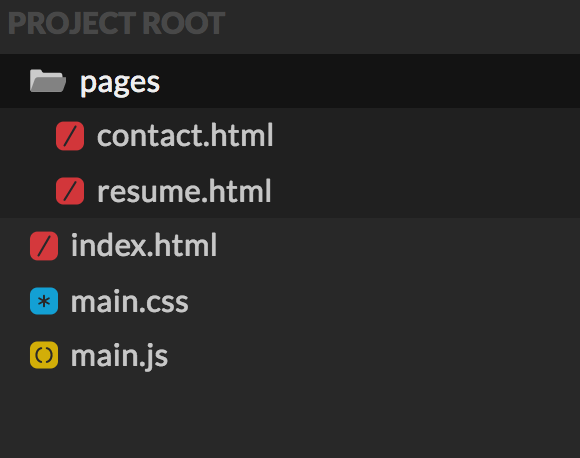
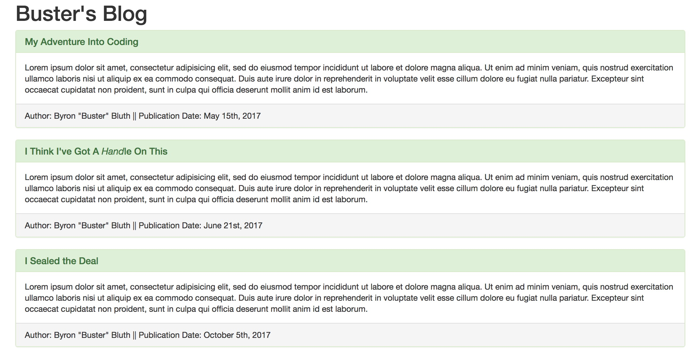
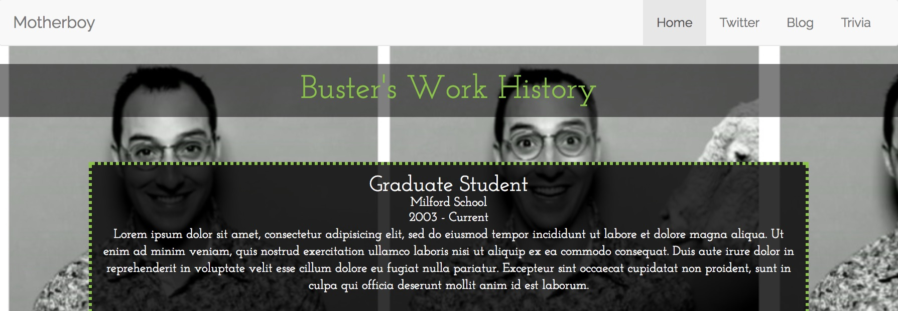
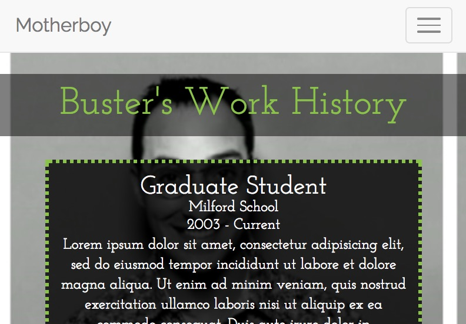
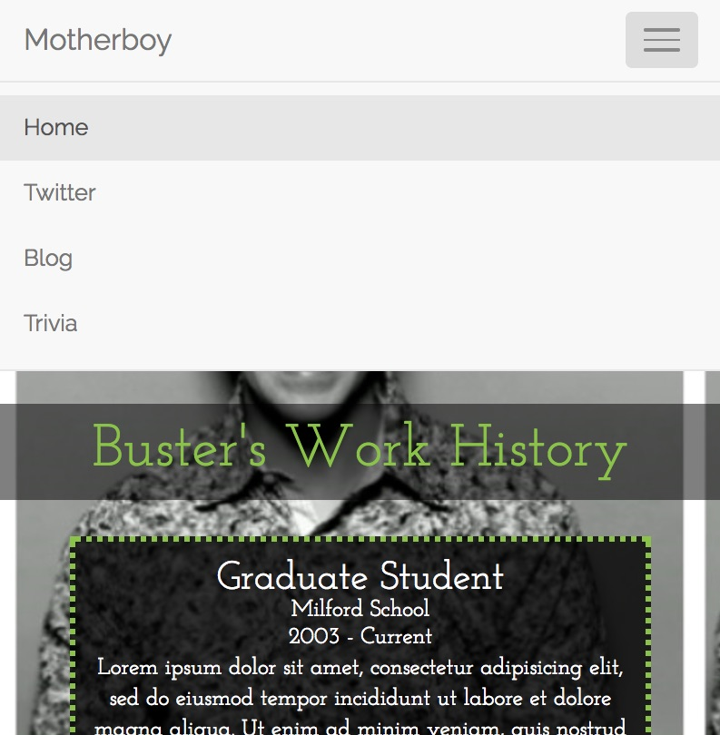
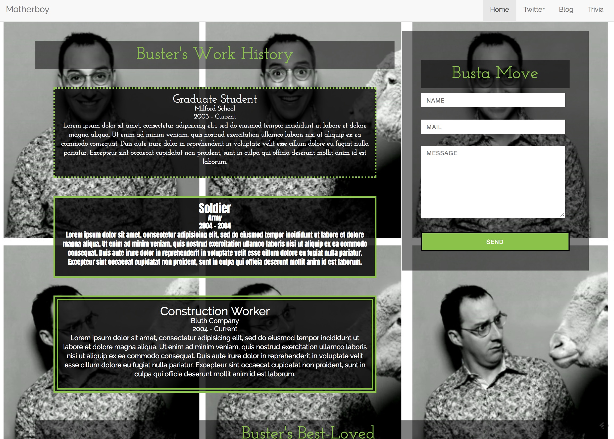

In Class
Personal Website
Codepen Instructions
Create a new CodePen project.
Instructions
You will create a codepen project for your personal website.
- Your site will contain the following pages:
- A main/home page (index.html) with a photo of you and a section where you describe yourself. You should also include your "interest" cards on this page.
- A page with your professional work experiance (resume.html).
- A contact me page (contact.html) which contains a form that the user can use to contact you.
- There should also be a main stylesheet (main.css) that is used for styling your site.
- All Javascript should be in a main javascript file (main.js)
- Create a navigation bar that links to each of the pages correctly. The navigation bar should appear on each page. You can use your own styling or a Bootstrap nav bar.
Result
Oh, The Places I've Been
Codepen Instructions
Open up your Personal Bio Site Codepen Project.
Instructions
- Create a new HTML file in your pages directory called "visited-places.html"
- Create a nav bar link to this new page from your index.html
- Create a new JS file called "get-places.js"
- Link your JS file to your "visited-places.html"
- Include a single button.
- Give the button an ID of "see-places".
- Create an empty div element that comes after the button.
- Give the div element an id of "output-places".
- Create an array of image links for places you've been. (A great source of images is Google Destinations).
- Create an array of the names of those places that you created in the step above.
- Create an event listener on the
see-placesbutton. - The event listener should call a function
populatePlaces. This function should loop through the arrays and create "cards" with the image and the title. You should give each of these cards a class so you can style them. - The function should output all of these cards to the
output-placesdiv. - Bonus: The function hide the
see-placesbutton. - STYLE! Style the cards in a way that looks pretty.
In your HTML
In your JS
Result

Homework
Spruce Up Your Personal Bio Site Using Bootstrap
Level 1: Redo Your Blog Page Using Cards
Codepen Instructions
Option 1: Open up your personal blog site pen from the last exercise.
Option 2: Create a new CodePen pen for a "Bootstrap-ified" blog.
Instructions
- Use the necessary link and script tags to install Bootstrap in your project.
- Add a div with the class of "container" around all the content on your page.
- Convert each of your blog entries into a Bootstrap Card.
- The blog title should be in a card-header div and the content should be in the card-body div. The author and date should be in a card-footer div.
Result
Level 2: Add Navigation to Your Personal Site
Codepen Instructions
Option 1: Open up your personal bio site pen from the last exercise.
Option 2: Create a new CodePen pen for a "Bootstrap-ified" personal bio site.
Instructions
- Use the necessary link and script tags to install Bootstrap in your project.
- Convert your navigation bar to a Bootstrap Responsive Navigation bar (style of your choosing).
Result
Full Screen
Mobile (or smaller screen size)
 Level 3: Use the Grid System For Page Layout
Codepen Instructions
Option 1: Open up your personal bio site pen from the last exercise.
Option 2: Continue with the new CodePen pen you created in Part 2 for a "Bootstrap-ified" personal bio site.
Instructions
- Add a div with the class of "container" around all the content on your page (with the exception of the nav bar).
- Utilize the Bootstrap Grid system to make your "work history" section take up 2/3 of the width of the page.
- Utilize the Bootstrap Grid system to make your "contact me" section take up 1/3 of the width of the page.
- Bonus: Utilize col-lg-x/col-md-x/col-sm-x to make it so that your page has the following views:
- On Large: Work History 2/3 of page width; Contact Me 1/3 of page width.
- On Medium: Work History 1/2; Contact Me 1/2
- On Small: Work History 100%; Contact Me 100%
Result
Level 4: Go Crazy
Codepen Instructions
Option 1: Open up your personal bio site pen from the last exercise.
Option 2: Continue with the new CodePen pen you created in Part 2 for a "Bootstrap-ified" personal bio site.
Instructions
- Play around with more Bootstrap components and give your personal bio site some pizzazz!